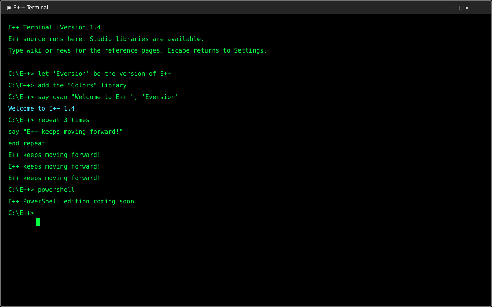
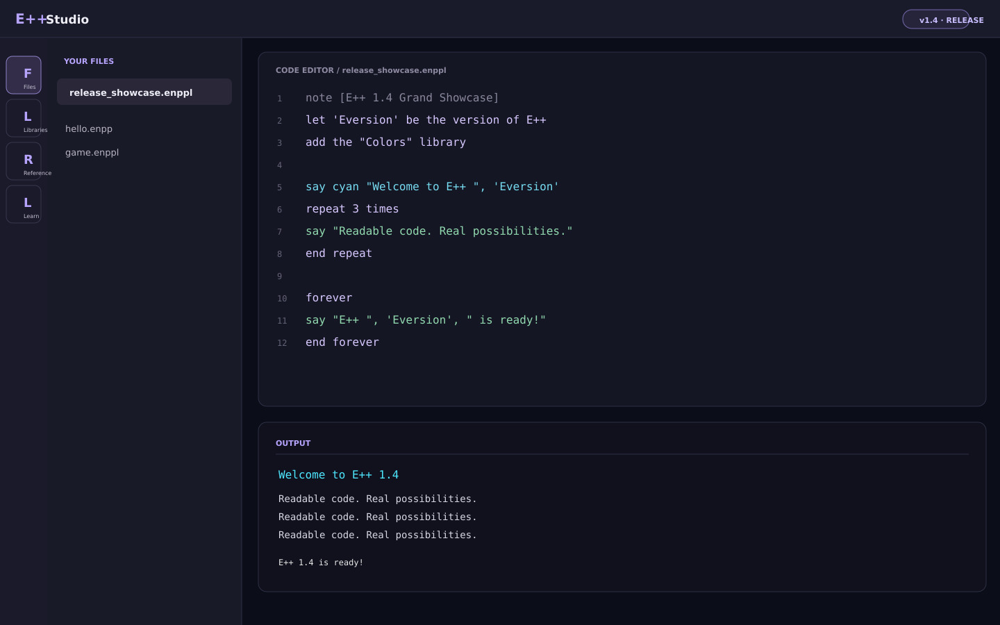
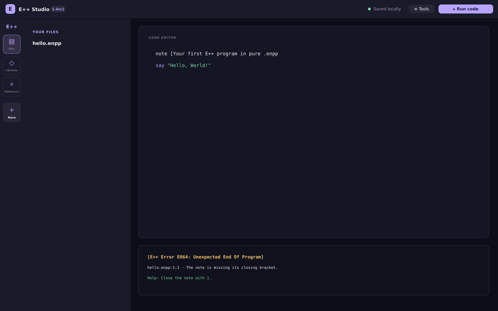
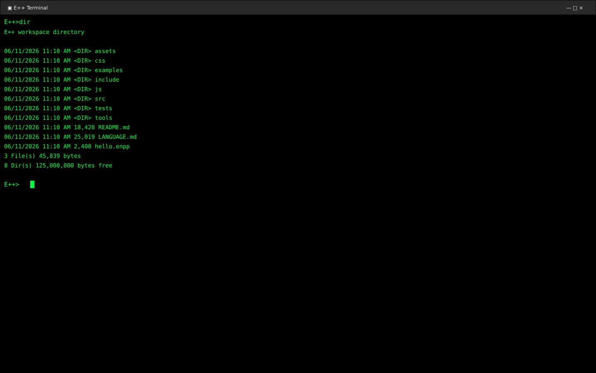
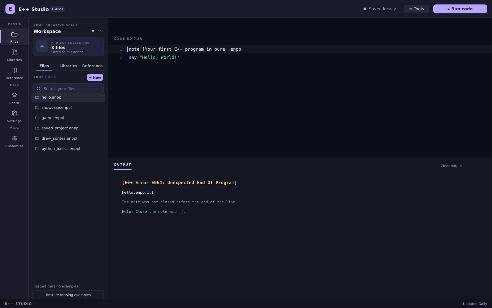

Your whole E++ toolkit.
Run E++ programs in a clean terminal view with the Studio libraries available, including colored output and console control. The Wiki and News open from the terminal too; Escape returns to Settings.
E++ 1.4 closes the release-candidate cycle with an E++-only Terminal, support for the Studio libraries, new forever loops, and a built-in version value for programs that introduce the release they run on.
Run E++ programs in a clean terminal view with the Studio libraries available, including colored output and console control. The Wiki and News open from the terminal too; Escape returns to Settings.
Counted repeat loops are joined by forever ... end forever blocks for work that should continue until stopped.
The built-in the version of E++ expression gives a program its runtime version without hard-coding it into every message.


Capture the version once, then reuse it in greetings and completion messages:
let 'Eversion' be the version of E++ say "Welcome to E++ ", 'Eversion' forever say "Running E++ ", 'Eversion' end forever
E++ 1.4rc1 tightens the error families and makes a busy Studio easier to navigate. Extra sidebar shortcuts now stay tucked away until you expand More.

Files, Libraries and Reference stay easy to reach. Less-used shortcuts and custom sidebar actions are grouped under More, so the sidebar doesn’t turn into a long wall of buttons.
An unclosed note is a general end-of-program mistake: it now reports E064, not F007. F codes are reserved for lexer failures; a lexer that cannot boot remains a critical F015 failure.
The layout editor explains what belongs in the original position, sidebar, top bar or Removed area. Presets describe what they do, and changes save automatically.
Turn on Terminal mode in Settings and the Studio UI is replaced by a terminal window: a green-on-black directory listing, an E++> prompt and a blinking input cursor. Type E++ statements to run them; dir, help, clear and ver are available too. Press Escape to return to Settings.


E++ 1.4b1 is the error overhaul. Every message the language can print now has a permanent code, a plain-English name and a fix — one hundred of them, counted and documented.

Seventy-five general errors (E001-E075) stop the program where the mistake is. Five warnings (W001-W005) never do. Five Z codes (Z001-Z005) can only happen inside E++.zip. Fifteen fatal lexer errors (F001-F015) mean the source could not be read at all.
An equation written inside double quotes is W001: E++ tells you the quotes are doing nothing, then prints exactly what you asked for. A library you add and never use is W003. A number written as text is W005.
The activity bar was five icons with no words: a book, a cap and a grid. It is now grouped into Panels, Help and More, and every button carries its name — Files, Libraries, Reference, Learn, Settings and Customize. Nothing moved.
Every phone rule in Studio's stylesheet sat inside a media query that could never match, so narrow screens were served the desktop shell. They now apply below 900px: one panel at a time, no sideways scrolling, and a bottom bar with Files, Code, Learn, Settings and Output.


Every failure reads the same way in the Studio, the C++ command line and the Python engine: the code and its name, the file, line and column, the line itself with a caret, a reason, and the help that gets you unstuck. The whole catalogue is in LANGUAGE.md §14, and node tests/errors-1.4b1.mjs proves the split.
[E++ Error E018: Unclosed Block]
--> game.eppl:7:1
|
| repeat 3 times
| ^
= Reason: This repeat block has no matching ending.
= Help: Close the block with its own ending,
for example: end repeatE++ 1.4a3 brought a little movement to your workspace, plus thoughtful improvements that make creating feel smoother.

Menus, panels, dialogs and controls now move gently as you work. Prefer things still? Turn Studio animations off in Settings. Your system’s reduced-motion preference is always respected.
Reset your appearance without changing your files or layout. Keyboard focus stays where you need it when choosing colors and arranging launchers.


Open Tools with Ctrl+Shift+P to browse your features and projects. Customize which shortcuts appear in Tools and the sidebar. The explorer sorts files naturally, searches show a helpful empty state, and notifications stay visible for their full duration. EShare, presets and your existing projects are still right where you left them.
E++ 1.4a2 is here, with more ways to make your workspace your own. A little more you, a lot more room to create.


Open Settings → Edit Studio to drag launcher shortcuts between the activity bar and top bar. Remove what you don’t need, bring it back later, or start from a preset. Your editor, output and Tools always stay put.
Pick from a whole palette of colors, or create a custom accent. Fine-tune your editor with text size, line numbers and line wrapping. Your choices are saved on this device.

EShare now has one home in Tools. Automatic library file renaming remains on by default, and the news is always one click away.